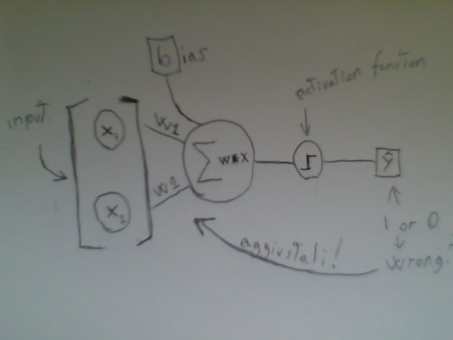
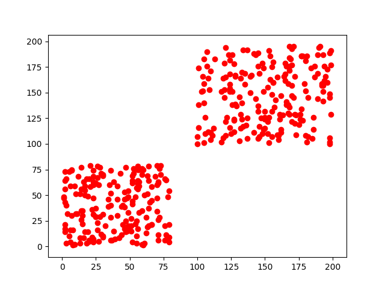
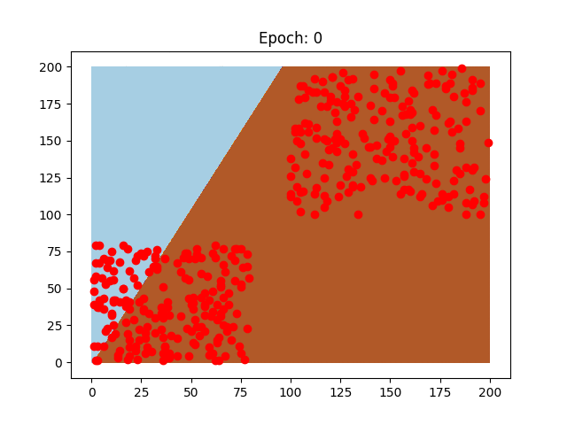
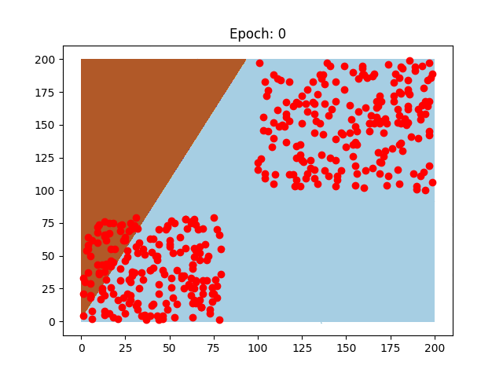

Un neurone per leggere Parte 1
In un paio di post fa abbiamo visto come rappresentare frasi in un piano cartesiano 2d, 3d e multidimensionale, trasformando le parole in vettori. E' stato suggerito come questi vettori possano essere usati per calcoli di distanza e, quindi, possono potenzialmente anche essere raggruppati. La classificazione è una delle task in cui machine learning è usato più estensivamente grazie ai molti modelli a disposizione. Uno dei più basilari e conosciuti è il perceptron.
Creato da uno psicologo ispirandosi ai neuroni del cervello umano, il perceptron impara dai dati ricevuti a distinguere se un input appartiene ad un gruppo / classe o un'altra. Per poter classificare dati, il perceptron è un ottimo modello lineare. Permette di categorizzare dati in due gruppi dopo essere stato allenato.
Come imparano le macchine
Per poter insegnare ad un modello, si usa un misto di analisi di funzioni, algebra, geometria e magia. Le macchine hanno dei weights (pesi), che devono calibrare fino al loro valore ottimale per poter categorizzare al meglio un input.
Un esempio concreto in cui molti possono rispecchiarsi, è quello del voto di partenza di laurea. Fingiamo di sapere i voti ricevuti a tutti gli esami, diciamo che sono 10 in totale, ma non i crediti (CFU) degli esami passati, e di sapere già quale è il nostro voto di partenza alla seduta di laurea, per esempio 95. Quindi:
- 10 voti
- 95 voto di partenza laurea
- crediti???
Quando andiamo a fare il calcolo della media ponderata per sapere il voto di partenza, dobbiamo sapere i crediti di ogni esame, ma cosa fare se non li sapessimo come in questo caso?
Un'opzione sarebbe assegnare dei crediti a caso ad ogni esame, fare il calcolo e vedere quale è il totale che esce fuori, se esce 80 probabilmente dobbiamo aggiungere dei crediti ad alcuni esami, e se esce 115 dobbiamo sicuramente togliere dei crediti ad alcuni esami invece.
I modelli di machine learning usano più o meno lo stesso meccanismo, dove si hanno:
- dati di input (equivalente dei voti)
- weights (l'equivalente dei crediti)
- output (equivalente del voto di laurea)
Un altro esempio, spesso usato, è quello della radio. Un modello per imparare aggiusta le manopole dei weights come noi facciamo con le manopole della radio fino a quando il segnale non è buono e la posizione delle manopole ottimale.
Il Perceptron
Ecco un bellissimo schema del perceptron

A parte gli scherzi, ce ne sono di ottimi come questo

Il perceptron, quindi, prende degli input, somma i prodotti di essi con i pesi, aggiungendo il bias, e passando per una funzione d'attivazione decide se l'input appartiene al gruppo A o B.
I mattoni
Per prima cosa, gli unici "oggetti" che questo semplice perceptron userà saranno:
- l'input con labels
- I weights (pesi)
- Il bias
Non abbiamo bisogno di altro, con questi tre elementi possiam fare qualsiasi classificazione lineare, in più weights e bias sono creati in modo casuale.
Creaiamo la classe del nostro Perceptron, definiamo le sue variabili, input, bias e weigths. Per i weights dovremo giostrare un pochino con numpy, questo ci tornerà utile più in la. Praticamente creiamo un vettore di numeri casuali. La cosa importante, però, è la forma di questo vettore, deve avere la stessa forma dell'input e quindi useremo la forma dell'input per crearlo della stessa dimensionalità. Se l'input è un vettore 3d [1,2,3], quindi di forma (1,3), anche il nostro weight dovrà essere 3d [5,2,6] ad esempio (Noterete che il nostro perceptron può avere a che fare solo con input di una riga).
class Perc(object): def __init__(self, inputv): self.inputv = inputv self.W = np.ndarray.flatten(np.random.randint(1, 3,size=(1,inputv.shape[1]))) self.b = 0.5
Predizione
Adesso addentriamoci nell'algebra delle cose. Per predire la classe di un singolo vettore input, faremo un dot product tra esso e il weight, aggiungendo il bias. Se il risultato è maggiore di 0, allora sarà di classe 1, altrimenti di classe 0.
def predict(self,x, w): y = np.dot(x, w) + self.b if y > 0: act = 1.0 else: act = 0.0 return act
Converging…Converging…
Ok, il perceptron predice bene il gruppo del primo input, ma al secondo sbaglia e… Adesso? Se cercassimo di capire perchè il nostro voto di partenza di laurea è quello che è, e ci accorgessimo che il nostro calcolo non coincide, oltre a un complotto guidato dall'università, l'unica spiegazione è che abbiamo dato un peso sbagliato ad uno degli esami fatti nel calcolo della media ponderata. Allo stesso modo, il perceptron vede di aver sbagliato, e va ad aggiustare i suoi weights così che magari troverà finalmente la combinazione giusta per fare la giusta predizione. La formula è semplice, aggiungiamo ai weights il prodotto dell'input, dell'errore e del learning rate. Definiamo ora la funzione per ridefinire i weights. Faremo la stessa cosa per il bias, ma senza includere l'input nel prodotto.
def descent(self, x,w, lr, target, pred): error = target-pred w = (w + (lr * error * x)) B = self.b + (lr * error) print("self.W:", w) print("B==",B) self.b = B self.W = w
No pain, no gain.
Adesso è ora di rendere questo processo iterativo. Dobbiamo ripeterlo più volte con tutti gli input del training set fino a che il perceptron non trova dei weights ideali che danno il minor numero di errori possibile. Ciò è abbastanza semplice, per ogni input, prediciamo la classe, se la predizione è corretta lasciamo i weights come sono, vanno bene in quel caso, altrimenti usiamo la funzione descent per ridefinirli. Facciamo ciò per un certo numero di volte (epochs). Alla fine, il nostro perceptron sarà allenato e pronto ad essere usato per conquistare il mondo.
def train(self,x,epochs,target): for i in range(epochs): for j in range(len(x)): act = self.predict(x[j],self.W) if act == target[j]: print("OK!") continue else: self.descent(x[j],self.W, 0.01, target[j], act) print("Descending...")
Primo test!
Creiamo un dataset con vettori che hanno coordinate x,y maggiori di 100 e uno con coordinate x,y minori di 80. Se rappresentiamo i dati creati avremo questi due gruppi ben distinti.

Ora, noi riusciamo subito ad occhio a distinguere che ci sono due gruppi ben diversi, ma noi abbiamo miliardi di neuroni e quello che abbiamo creato è un povero neurone solitario. Quindi, non sa ancora nulla, ciò che faremo quindi è dargli un vettore dopo l'altro. Prima di fare ciò però, mescoliamo i nostri vettori come un mazzo di carte e creiamo le etichette dei gruppi a cui appartengono.
o = np.random.randint(low = 100, high = 200,size=(200,2)) q = np.random.randint(low = 1, high = 80,size=(200,2)) X = np.concatenate([o,q]) np.random.shuffle(X) y = [] for i in X: if i[0] < 81: y.append(0.0) else: y.append(1.0)
Adesso è arrivato il tempo di usare il perceptron sui dati, creiamo un'istanza della nostra classe Perc, l'input sarà ovviamente X. Dopo aver creato l'oggetto perceptron, possiamo usare il metodo (o funzione) train, dove X sarà il training set,10 le epochs e le etichette (labels) dei gruppi saranno y.
perceptron= Perc(X) perceptron.train(X,10,y)
Dall'output, possiamo vedere ogni volta che il perceptron predice correttamente e, si nota chiaramente, alla fine del training il neurone ha imparato a distinguere chiaramente fra i due gruppi!
Ovviamente, per rendere il concetto più chiaro, possiamo rappresentarlo con delle eccezionali gif degne della front page di Reddit.


Questi sono due neuroni preparati sugli stessi dati, il pattern di come imparano è diverso, così come la velocità che impiegano, perchè sono stati usati due learning rate diversi.
Ora che è chiaro come funziona un neurone e abbiamo classificato semplici dati ben divisi in 2d, il prossimo passo è categorizzare dati più complessi, magari recensioni di film, o il genere di un libro!